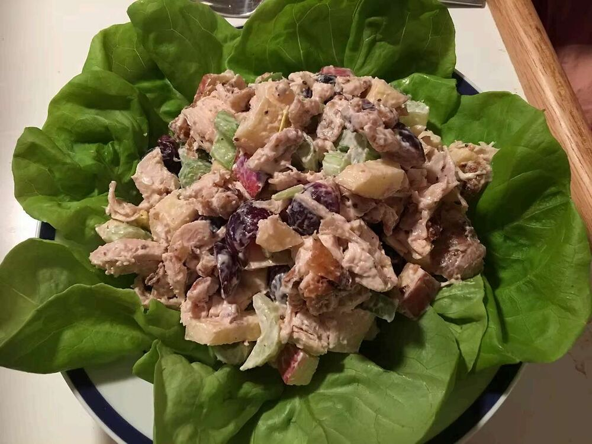

Waldorf Salad

First presented at the Waldorf Astoria Hotel in 1893, with additions in 2019…
Ingredients
- 6 Tbsp mayonnaise
- 1 Tbsp lemon juice
- 1/2 teaspoon salt
- 2 Chopped chicken breasts (newly added…)
- Pinch of freshly ground black pepper
- 2 sweet apples, cored and chopped
- 1 cup red seedless grapes, sliced in half (or 1/4 cup of raisins)
- 1 cup celery, thinly sliced
- 1 cup chopped, slightly toasted walnuts
- Lettuce
Instructions
- In a medium sized bowl, whisk together the mayonnaise, lemon juice, salt and pepper.
- Stir in the apple, celery, grapes, chicken and walnuts. Serve on a bed of fresh lettuce.